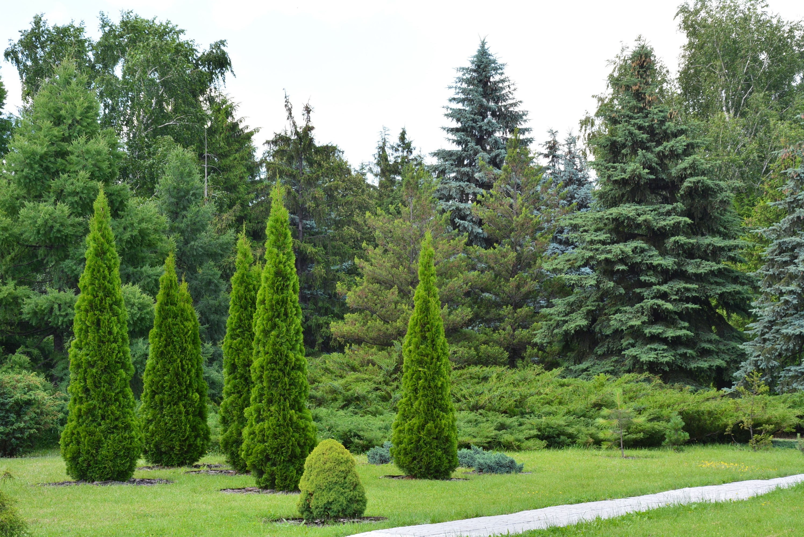
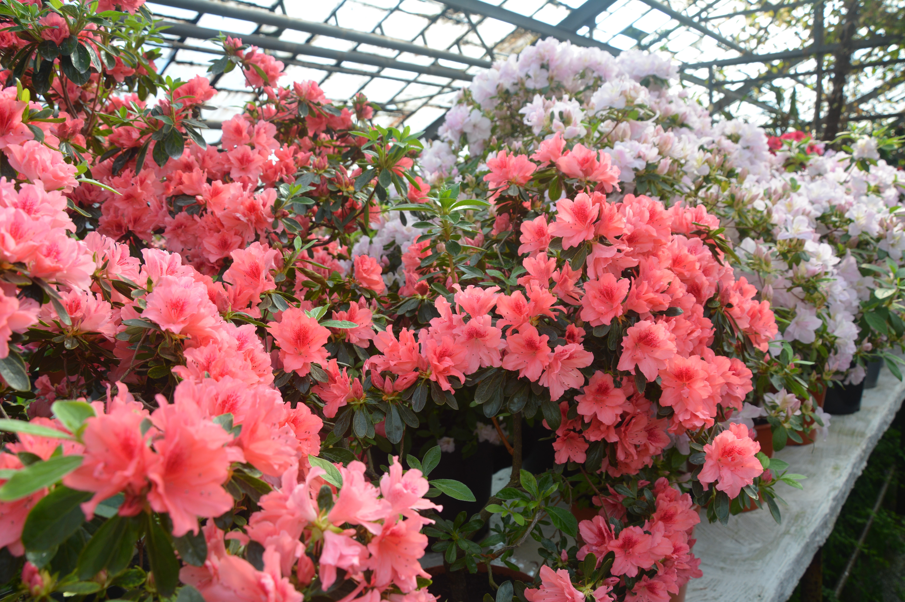

Криворіжжя – край, який має багату і давню історію, унікальний ландшафт і природні ресурси.
Незважаючи на те, що Кривбас один із найстаріших і найбільших залізорудних басейнів в Україні та найбільший регіон видобутку залізної руди в світі, на території ще збереглися ділянки незайманої природи, які входять до складу об’єктів природно-заповідного фонду загальнодержавного та місцевого значення.
На території міста Кривого Рогу налічується 14 об’єктів природно-заповідного фонду України загальною площею 375,44 га, з яких 3 площею 142,4 га є об’єктами загальнодержавного значення, інші є об’єктами місцевого значення. На всі зазначені об’єкти підприємствами і установами міста оформлено охоронні зобов’язання.
Підприємствами, на які покладені охороні зобов’язання щодо охорони, збереження та утримання об’єктів природно-заповідного фонду місцевого значення, здійснюються виготовлення та поновлення інформаційних знаків за власні кошти. Об’єктами загальнодержавного значення є: ландшафтний заказник "Балка Північна Червона"; геологічна пам'ятка природи "Скелі МОДРу"; Криворізький ботанічний сад НАН України.
Перлиною міста називають Криворізький ботанічний сад Національної академії наук України, який розташований у Тернівському районі нашого міста. Криворізький ботанічний сад НАН України – державна, бюджетна, неприбуткова науково-дослідна установа. Криворізький ботанічний сад НАН України створений 20 травня 1992 року (Постанова Президії НАН України №144 від 20 травня 1992 року). Ботанічний сад є об’єктом природно-заповідного фонду України загальнодержавного значення. Територія ботанічного саду займає площу 52,4 га. Найбільша площа Саду відведена під дендрарій – 22 га. Головна частина колекційного фонду деревних рослин розташована в експозиціях дендрарію. Тут створені моносади, в яких представлений декоративний сортовий матеріал, а саме – сирінгарій, розарій, сад магнолій, сад таволг, сад чубушників, сад безперервного цвітіння, сад сакури, експозиції господарсько-корисних рослин, квітниково-декоративних, рідкіс-них і зникаючих, лікарських. В оранжереї площею 1300м2 зібрана унікальна колекція тропічних та субтропічних рослин
Ботанічний сад відіграє значну роль в покращанні екологічного стану нашого міста. Всього в колекціях саду зібрано 4112 видів, форм та сортів рослин світової флори.